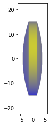
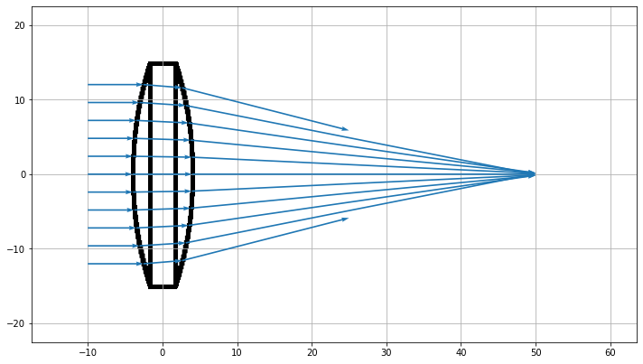
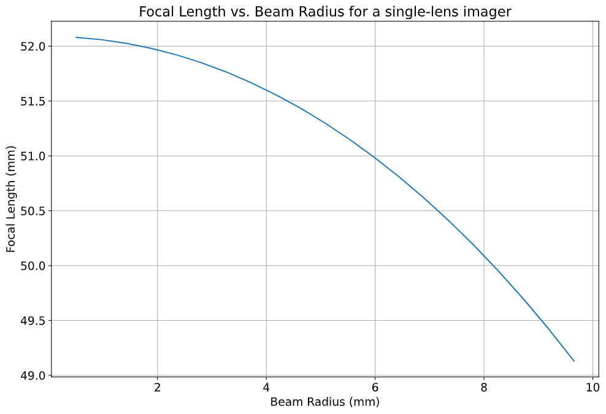
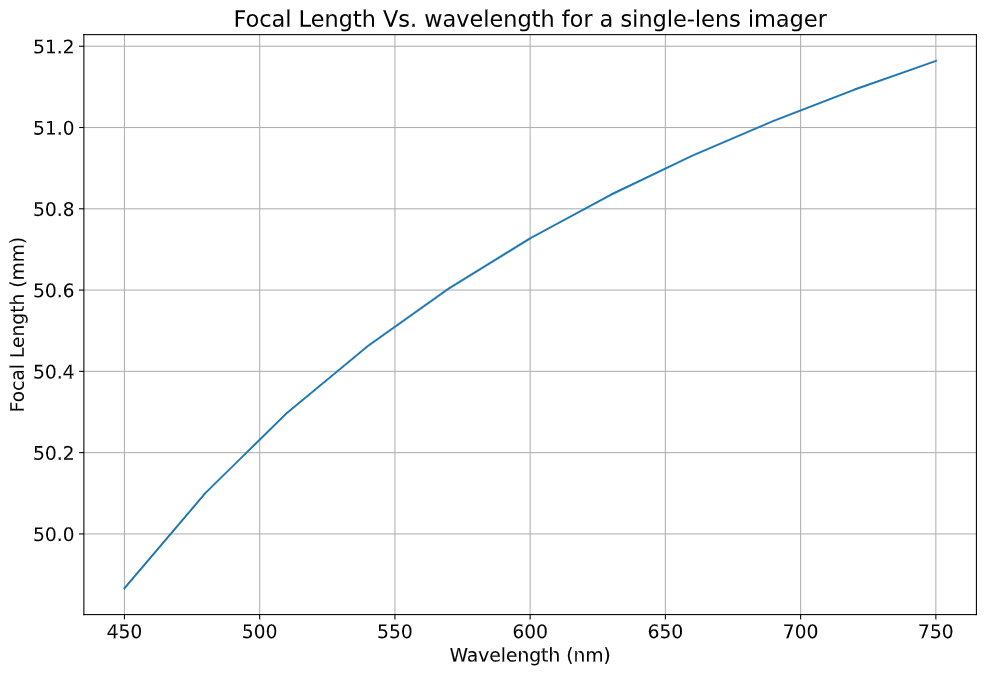
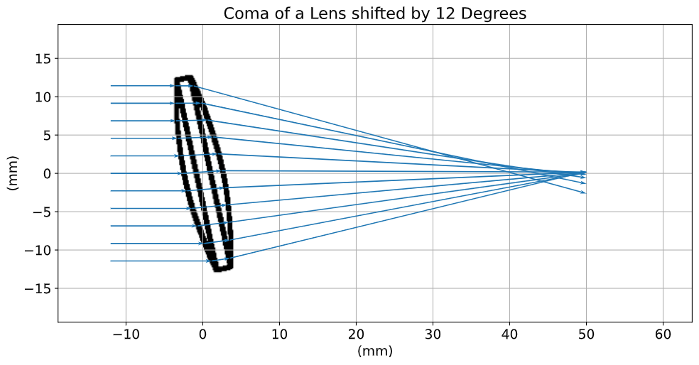
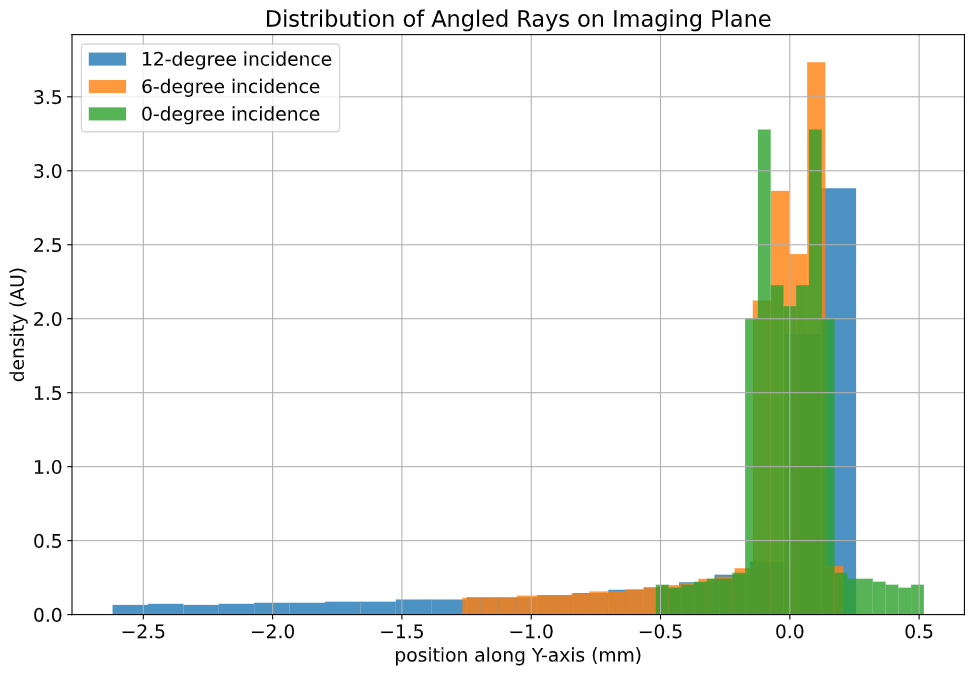

Design a Camera with Python and PyRayT: Part One
Have you ever cut open a camera lens to look at what's inside? I don't blame you if you haven't, lenses are ridiculously expensive and it's a one way operation. However, if you look at a picture of a cross-section, you'd see that the "lens" is actually made of upwards of a dozen individual lenses, each one doing its part to create a clear, error free image. Typically, understanding what's going on in the camera lens requires exhaustive calculations or expensive lens design software costing upwards of $10,000 for a single user. My annoyance at this price barrier (as somebody who uses those tools professionally) is what sparked me to create PyRayT, a free and open source generic ray tracer that pairs with the Scientific Python stack.
To celebrate PyRayT's v0.3.0 release, I'm going to walk through how it can be used to design and optimize a multi-lens camera. This first part of the series will cover why lenses need to be so intricate, and what happens if you tried to make a camera out of a single lens instead.
Contents
Quick Links
Why Are Camera Lenses so Complex?
If you rack your brain to recall highschool physics there's probably two things you remember about lenses:
A ray parallel to the optical axis converges onto the focal point.
A ray going through the center of the lens is unmodified.
With these rules you can trace simple diagrams showing how object images are formed by lenses.

Notice how in the above image every point in the object corresponds to exactly one point in the image, so in theory a single lens camera should be able to capture perfect reproductions of objects we want to image. Why then, does a picture from that camera end up looking like the one below?


Source: www.opticsthewebsite.com
These distortions between the object and image, called optical aberrations, are caused by higher order terms that are typically ignored when calculating lenses by hand using the paraxial approximation.
The goal of any camera design is to minimize these aberrations to the extent that they are not noticed by the end user. A single lens only has so many variables about it you can change, but adding multiple lenses to a system gives optical engineers additional degrees of freedom for the minimization (often by minimizing Siedel Aberration Coefficients, which are beyond the scope of the article).
So how bad could a single lens imager really be? And how do you improve the quality with additional lenses? Let's answer the first question by quantifing common aberrations for a single lens system.
Getting Up and Running with PyRayT
As mentioned above, hand calculations for lenses rely on approximations that don't capture aberrations. Fortunately, numeric ray tracers don't suffer from the same limitations which is why they're so valuable for accurate lens design. Since this article is about showcasing features of PyRayT, that's the ray tracer we'll be using. You can install the latest stable package from pip.
py -m pip install pyrayt
You can also check out the Getting Started Guide and list of built-in optical components for a general overview.
Creating a Simple Camera
To design our single-lens camera we only need two specs: system power and f/# (F-number). We want the system to have a focal length of 50mm, and since a lens' power is the inverse of focal length, our system power is 0.02. Our f/# will be 2.4, meaning the focal length should be 2.4x larger than the entrance aperture.
Thin Lenses
Our lens is the only component that contributes to system power, so the power of the lens has to equal the desired power of our system. To calculate lens power we'll use the lensmaker's equation.
Since we're doing the calculation by hand we'll make a couple approximations to simplify things: (1) the radii of curvature are equal and opposite (resulting in a biconvex lens), and (2) the thickness is small enough that we can discard the final term. Later we'll numerically optimize the entire system to correct for focus, but these approximations give us a good starting point.
The simplified equation then becomes:
Since the refractive index of most glasses is ~1.5, this means that our radius of curvature for a biconvex lens is equal to the inverse of the lenses power, which is also the focal length of the system!
Now we can construct our lens and visualize it with the draw function in the tinygfx package (installed as part of the PyRayT distribution).
# import the Ray Tracer Package import pyrayt import pyrayt.materials as matl from tinygfx.g3d.renderers import draw # All spatial units are mm lens_diameter = 30 lens_thickness = 5 system_focus = 50 # The focus of the system f_num = 2.4 # f-number of system # Creating a simple Lens lens_material = matl.glass["ideal"] lens_radius = 2*(lens_material.index_at(0.633)-1)*system_focus lens = pyrayt.components.thick_lens( r1=lens_radius, r2=-lens_radius, thickness=lens_thickness, aperture=lens_diameter, material=lens_material) draw(lens)
A lens is not too impressive by itself. Let's add the remaining parts of our system so we can start running ray traces!
Apertures and Baffles
There's two more pieces we need in order to make the camera: an aperture to block rays that exceed our f/# and an imager placed on our camera's focal plane. From a modeling perspective both will be accomplished with variations of PyRayT's baffle. Baffle's are 2D planes that absorb all light incident on them, perfect for modeling sensors as well as ideal beam-stops. For the imager we create a square baffle the same size as our lens and move it to the focal plane.
imager = components.baffle((lens_diameter, lens_diameter)).move_x(system_focus)
Our aperture can be thought of as a "baffle with a hole", where the hole is large enough to only let in rays with a cone angle specified by our f/#. pyrayt and tinygfx create arbitrary shapes via constructive solids meaning an aperture is a baffle with the center shape subtracted from it. The convenience function aperture does just this, creating a baffle with an arbitrarily shaped hole in the middle.
The diameter of the aperture that gives us the desired f/# depends on where in the system the aperture is located. If we place it half-way between the lens and the focal plane, the diameter of the opening has to be:
aperture_position = system_focus / 2 aperture_diameter = aperture_position / f_num aperture = components.aperture( size=(lens_diameter, lens_diameter), # make a square baffle aperture_size=aperture_diameter # put a circular opening in the center ).move_x(aperture_position)
Our First Ray Trace
With our components defined we're ready to simulate. The only thing we need is a test source that generates rays to trace through the system. For that we'll use PyRayT's LineOfRays which generates a set of linearly spaced rays projected towards the +x axis. The last step is to load all the components into a RayTracer object and run the trace function.
Almost all of the sources used to characterize our system will be parallel bundles of rays at various angles. This is because we're assuming the camera is focused at infinity, where any angular deviation between sets of rays originating from the same point are effectively zero.
# Create a Parallel ray set source = components.LineOfRays(0.8*lens_diameter, wavelength = 0.633).move_x(-10) tracer = pyrayt.RayTracer(source, [lens, aperture, imager]) tracer.set_rays_per_source(11) results = tracer.trace()
The results of a trace is a Pandas dataframe which stores information about the ray at every intersection of the simulation. However, for now we'd rather just visualize the ray trace, which is done with the show function.
# import matplotlib so we can manipulate the axis import matplotlib.pyplot as plt def init_figure() -> Tuple[plt.Figure, plt.Axes]: """ Convenience function to generate an axis with a set size """ fig = plt.figure(figsize = (12,8)) axis = plt.gca() axis.grid() return fig, axis # set up the figure and axis fig, axis = init_figure() axis.set_xlabel("distance (mm)") axis.set_ylabel("distance (mm)") # display the ray trace tracer.show( ray_width=0.2, axis=axis, view='xy') plt.show()
Looks like our lens is doing its job! All rays that transmit through the aperture are focused to an approximate point at the focal distance, and any ray angle that exceeds our f/# is blocked. Unfortunately since the aperture and imager are 2D objects, they don't show up in the ray trace, but we know that they are there because rays terminate on their surfaces.
Characterizing Lens Performance
A picture may be worth 1000 words, but when it comes to analyzing our lens' performance data is key. Using the results dataframe we can explore the RaySet metadata of each ray as they travel through the system, and we'll use that information to see how our single lens design holds up against common imaging aberrations: spherical, chromatic, and coma. As mentioned above, characterizing the system with Seidel coefficients is beyond the scope of the article, instead we'll use Matplotlib to generate plots of the system focus across different parameters.
Spherical Aberrations
Spherical lenses don't actually focus light to a perfect point. In fact, the focal point is a function of the radius where the light enters the lens (in our case the position on the y-axis where the ray originates). We can easily visualize the spherical aberrations by creating a helper function that generates a set of rays along the y-axis, and calculates where each ray intercepts the x-axis.
def spherical_aberration(system, ray_origin: float, max_radius:float, sample_points=11): # the souce is a line of rays only on the +y axis. It's slightly shifted so zero is not a point # as it would focus at infinity source = pyrayt.components.LineOfRays(0.9*max_radius).move_x(ray_origin).move_y(max_radius/2) tracer = pyrayt.RayTracer(source, system) tracer.set_rays_per_source(sample_points) results = tracer.trace() # Since we don't have the actual imager as a variable in the function # assume it is the last thing a ray intersect with, meaning the rays that hit it have the # highest generation imager_rays = results.loc[results['generation'] == np.max(results['generation'])] # Intercept is calculated using the tilt for each ray, with is a normalized vector representing # the direction the ray is travelling intercept = -imager_rays['x_tilt']*imager_rays['y0']/imager_rays['y_tilt'] + imager_rays['x0'] # the original radii radii = results.loc[np.logical_and(results['generation']==0, results['id'].isin(imager_rays['id']))]['y0'] # create a new dataframe with the aberration metrics results = pd.DataFrame({'radius': np.asarray(radii), 'focus': np.asarray(intercept)}) return results
Using the function on our single-lens system yields the above plot, showing that the focal length of the lens is changing by almost 10% based on the radius alone! This aberration would cause our single-lens images to come out "blurry" even when the imager is aligned to the focal plane.

An image suffering from spherical aberrations. Source: www.opticsthewebsite.com
Speaking of the focal plane, we also see that the focus of our lens is ~52mm instead of the 50 we calculated, due the the thick lens portion of the lensmaker's equation we chose to ignore.
Chromatic Aberrations
Unlike spherical aberrations, chromatic aberrations are explained by the lensmaker's equation: the focal point of the lens depends on the refractive index of the lens' material. Real materials don't have a constant refractive index; instead, the refractive index is a function of wavelength. This effect, called dispersion, is more often associated with the reason prisms split white light into a rainbow of colors. In our case it means our lens will have a wavelength dependent focus.
The same way we wrote a function to characterize spherical aberrations, we can write one to quantify chromatic aberration:
def chromatic_abberation(system, ray_origin: float, test_radius:float, wavelengths: np.ndarray) -> pd.DataFrame: # create a set of sources for every wavelength of light sources = [ pyrayt.components.LineOfRays(0, wavelength = wave) .move_y(test_radius) .move_x(ray_origin) for wave in wavelengths] # Create the ray tracer and propagate tracer = pyrayt.RayTracer(sources, system) tracer.set_rays_per_source(1) results = tracer.trace() #filter the rays that intersect the imager imager_rays = results.loc[results['generation'] == np.max(results['generation'])] # calculate intercept of the imager rays with the x-axis and form into a dataframe intercept = -imager_rays['x_tilt']*imager_rays['y0']/imager_rays['y_tilt'] + imager_rays['x0'] results = pd.DataFrame({'wavelength': imager_rays['wavelength'], 'focus': intercept}) return results
If we run this function on our current system the results will say that every wavelength has the exact same focus! This is because we made the lens out of an "ideal" glass with a refractive index (n) of 1.5. Let's replace our lens with one made of a popular crown glass instead:
lens_material = matl.glass["BK7"] # Update this line of the lens definition
Running the function on our newly dispersive system shows a focal length shift of ~1mm (2%) across the visible spectrum.
An image taken with this lens would result in sharp edges in our photos having a 'rainbow' effect. Interestingly, this aberration is sometimes sought after for artistic effect, going as far as being including as a graphics setting in id's 2016 Doom reboot.

An image with and without chromatic aberration. Source: wikipedia.org
Coma Aberrations
The last aberration we'll quantify is coma. Instead of being a change in focal length, coma is a change mangification vs. angle of incidence on the system. The name comes from the fact that a point imaged with a system suffering from coma looks like the coma of a comet.
The easiest way to visualize coma is to plot a LineOfRays hitting the lens at non-normal incidence. In a coma free imager, the distribution of ray-imager intersections should be symmetrically distributed about the central ray.
While we could generate three sources at three distinct angles and run a single ray trace, we're instead going to leverage PyRayT's pin function to manipulate the angle of the lens. Since the position of the lens is a property of the lens itself, updating the position without remembering to undo it later will effect calculations down the line. the pin context manager takes care of this for us by undoing any transformations of pinned objects when the context manager exits.
The main advantage of rotating the lens instead of the source is that the incoming rays stay perpendicular to the imager, and nominally centered about y=0.
# Create the system source = pyrayt.components.LineOfRays(0.9 * lens_diameter).move_x(-10) tracer = pyrayt.RayTracer(source, [lens, imager]) tracer.set_rays_per_source(1001) angles = (12,6,0) fig, axis = init_figure() for n,angle in enumerate(angles): with pyrayt.pin(lens): # pin the lens in place so its rotation resets between iterations lens.rotate_z(angle) results = tracer.trace() imager_rays = results.loc[results['generation'] == np.max(results['generation'])] axis.hist(imager_rays['y1'], bins=21, label = f"{angle}-degree incidence", density=True, alpha=0.8) # plot labels axis.set_xlabel("position along Y-axis (mm)") axis.set_ylabel("density (AU)") axis.set_label("Focal Spot Distribution vs. Angle of Incidence") plt.legend() plt.show()
Just looking at the ray trace we can see the angled rays don't come to any central focus, and the histogram has a strong skew towards the -y axis. Like spherical aberrations, coma will cause our images to blur; however, the distortion is worse the further you are from the center of the imager, with the middle of the image remaining sharp.
An image suffering from coma aberrations. Source: www.opticsthewebsite.com
Next Steps
This wraps up the first part of our camera design. It might not seem like much, but understanding the limitations of a simple system helps justify why we go through the process of desiging a complex one. The full Jupyter notebook for the design is on GitHub, and next post I'll show how with just one additional lens, we can drastically minimize all three of the above aberrations to help our camera generate a cleaner final image! In the mean time feel free to explore the design and see how much optimization you can do with just one lens:
What about the design changes if you pick a different material?
If you break the symmetry between the front and back surface can you reduce aberrations?
Is there a way to reduce chromatic aberration only by changing the physical dimensions (not material) of the lens?